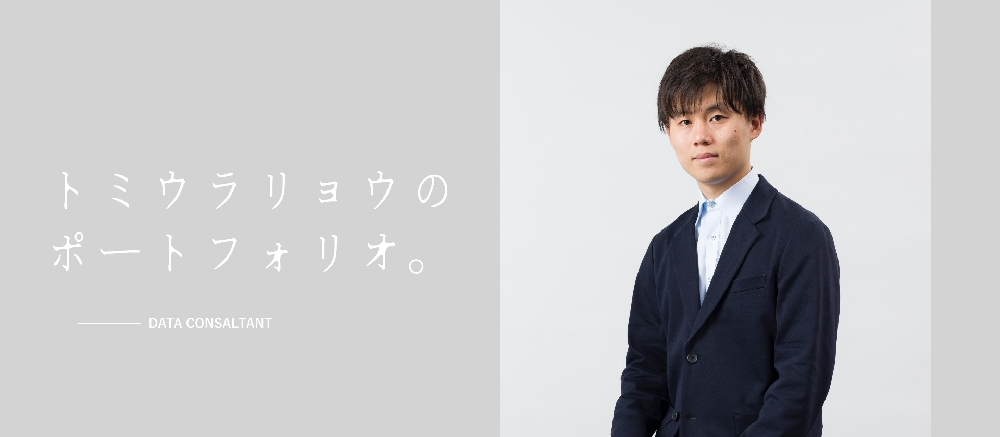

Service
システムサポート
System Support
GA4/GTM、BigQuery、BIツール等データ計測環境および分析基盤の構築をサポートします。企画〜要件定義フェーズではお客様がデータの取り扱いについてきちんと理解されるまで寄り添います。
プロジェクト管理
Project Management
データ計測基盤の構築やWeb制作における全般のプロジェクトマネジメントを担当します。ガントチャートをベースとしたタスク管理と細やかなコミュニケーションを心がけた信頼構築を得意としています。
データ/デザイン分析
Data&Design Analysis
定性・定量調査から課題を抽出、デザインとデータの両方の観点で具体的な改善施策案を提案します。KPI策定ではカスタマージャーニーマップの作成、ユーザーインサイトの把握を目的とした仮説検証もサポートします。
Works